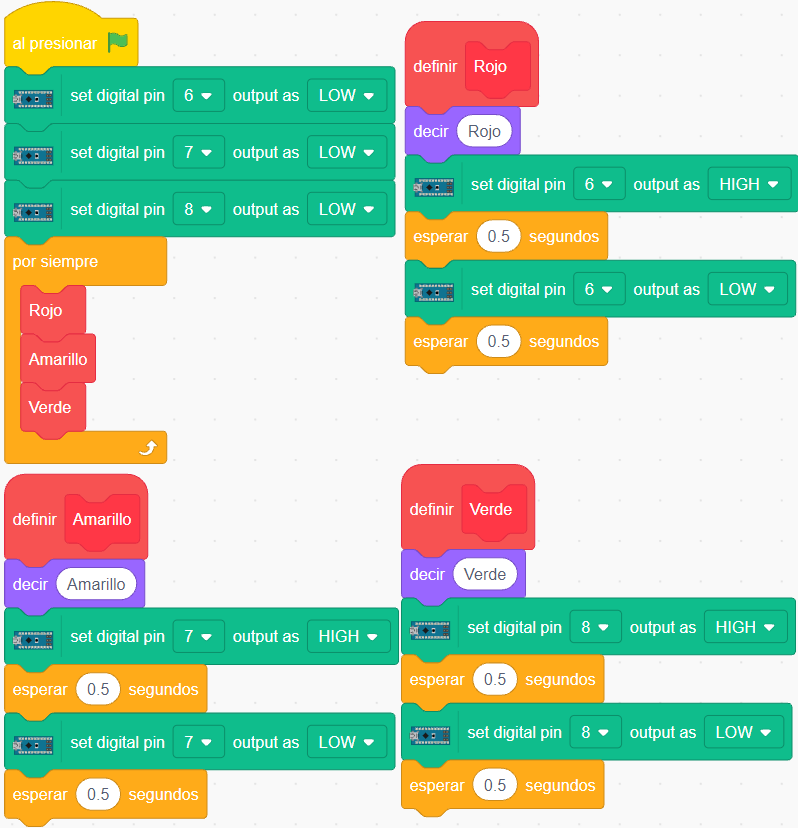

Programamos los leds de un semáforo
PonchoBot viene con su propio semáforo incorporado, para facilitar el aprendizaje de la programación.
PonchoBot viene con su propio semáforo incorporado, para facilitar el aprendizaje de la programación.
Hay diferentes maneras de programar un semáforo, la más simple es con el mismo intervalo de tiempo para los tres led (comenzando por la luz roja pasando a la amarilla y luego la verde); repitiendo este cilco hasta que se finalice el programa.

En esta propuesta de programación se ha utilizado la creación de tres bloques: Rojo - Amarillo y Verde. Como se ve los tres tienen los mismos bloques, variando solamente los parámetros del número de pin y la leyenda del globito:
Su lógica es igual a la ya vista para el Blink del led rojo conectado al pin 13, solamente se ha agregado el bloque decir ... , ubicado dentro de la categoría Apariencia , para que Tobi muestre un globito con el color del led que se enciende.
Una vez creado los tres bloques, Rojo, Amarillo y Verde, y completada la programación del bloque Rojo, se puede duplicar haciendo clic derecho y pegando los bloques a las cabeceras definir Amarillo y definir Verde , modificando el número de pin y el color dentro del bloque decir ... , como se observa en la animación anterior.
Descargar programa de ejemplo (.sb3 - 67 KB)